Borj El Ghazi Mustapha à Djerba, appelé aussi Borj El Kebir est un fort jouxtant le port de pêche d’Houmt Souk, chef-lieu de l’île de Djerba.
Voir plus...L'île aux flamants roses appelée aussi "Ras R'mal" (arabe:cap du sable), est une presqu'île se situant au nord de l'île de Djerba.C'est l'un des endroits les plus visités de l'île de Djerba
Voir plus...Djerba est marquée par une forte densité de mosquées qui ont assumé au cours des siècles, dans la vie des habitants de l'île, des fonctions aux multiples dimensions
Voir plus...Depuis 2014, le village d’Erriadh abrite Djerbahood, véritable musée à ciel ouvert, c’est un lieu authentique investi par des artistes venus du monde entier. Un projet artistique et humain inédit à l’origine de la restauration du patrimoine architectural d’Erriadh, source d’un tourisme engagé et durable.
Voir plus...Le musée de Guellala est un musée situé sur l'île de Djerba en Tunisie. C’est en 1991 que germa l'idée de la création d’un musée consacré au patrimoine tunisien et spécialement djerbien dans toutes sa diversité. En 1997, les travaux débutent, et le 15 mars 2001, le musée de Guellela est enfin prêt pour recevoir son premier visiteur, le 15 avril c’est l’inauguration
Voir plus...La plage de Sidi Jamour est l'une des plus belles plages de l'île, située près de Houmt Souk, et s'étend sur une longueur de 119 mètres entourée d'étals vendant divers types de marchandises, de mets délicieux et de boissons rafraîchissantes, en plus de la présence de chalets qui sont loué pour ceux qui veulent passer une belle nuit près de la plage,
Voir plus...Borj El Ghazi Mustapha à Djerba, appelé aussi Borj El Kebir est un fort jouxtant le port de pêche d’Houmt Souk, chef-lieu de l’île de Djerba.Cet ouvrage défensif a été édifié par Roger de Loria, l’amiral d’Aragon et de Sicile en 1289 sur l’emplacement d’une place forte romaine dont les vestiges ont été réemployés dans la construction de l’ouvrage.
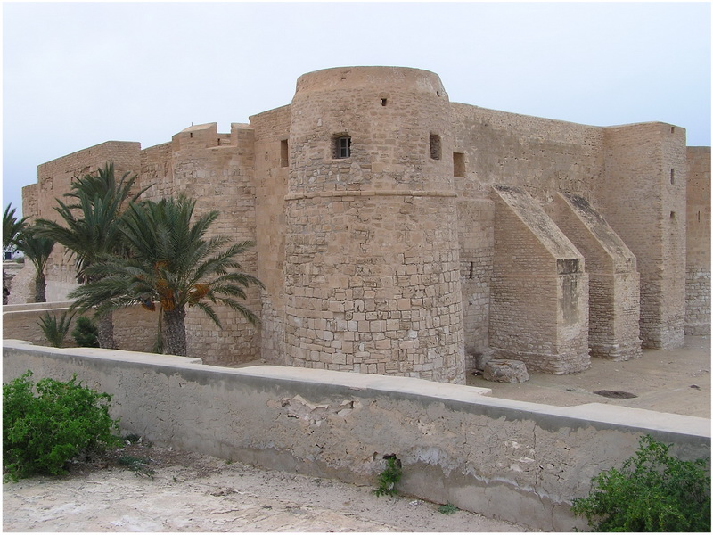 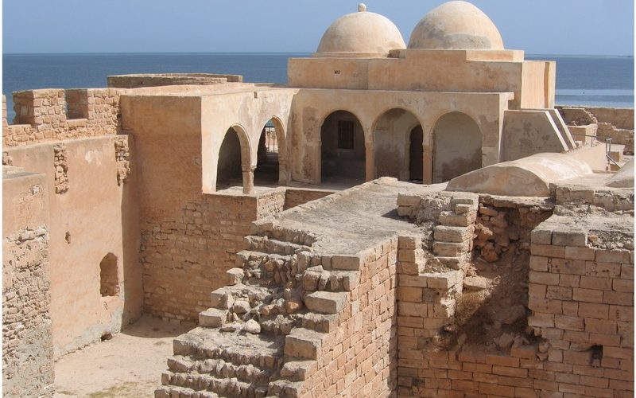 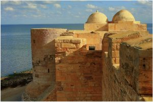Celui-ci a été réaménagé, puis renforcé en 1557 par Dragut et figé dans sa configuration actuelle par une garnison espagnole de 6000 soldats venus, en 1560, chasser les corsaires turcs de l’île, avant d’être exterminés la même année par le corsaire turc.De forme rectangulaire, Borj El Ghazi Mustapha est flanqué de tours rondes et carrées. On y accédait par un pont-levis au dessus d’un fossé isolant l’ouvrage. La porte d’entrée donne sur un vestibule défendant l’accès à la cour intérieure qui renferme des vestiges de garnison qui se sont succédés dans cette enceinte depuis l’Antiquité. Une salle, aménagée en antiquarium, accueille divers objets trouvés sur place ainsi que des panneaux explicatifs. Les chemins de ronde, pour leur part, offrent une superbe vue sur les environs et le large.
L'île aux flamants roses appelée aussi "Ras R'mal" (arabe:cap du sable), est une presqu'île se situant au nord de l'île de Djerba. C'est l'un des endroits les plus visités de l'île de Djerba. Chaque année, l'île aux flamants roses accueille des milliers de touristes qui font la traversée en bateaux pirates en provenance du port de Houmt Souk.
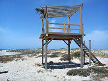 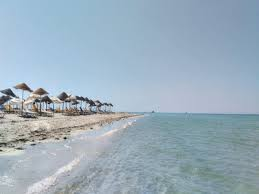 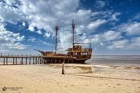Djerba est marquée par une forte densité de mosquées qui ont assumé au cours des siècles, dans la vie des habitants de l'île, des fonctions aux multiples dimensions. En effet, outre sa vocation de centre de culte, la mosquée accueillait des étudiants, venait en aide aux nécessiteux, servait de lieu où on tranchait les litiges…
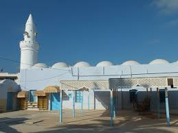 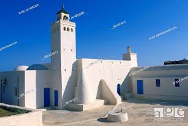 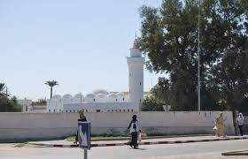Dans les périodes de guerre ou d’invasions, elles se transformaient rapidement en un lieu de refuge, où on se retranchait pour se défendre. Chaque mosquée à Djerba est unique et différente.
Depuis 2014, le village d’Erriadh abrite Djerbahood, véritable musée à ciel ouvert, c’est un lieu authentique investi par des artistes venus du monde entier. Un projet artistique et humain inédit à l’origine de la restauration du patrimoine architectural d’Erriadh, source d’un tourisme engagé et durable.
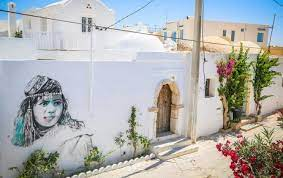 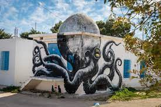 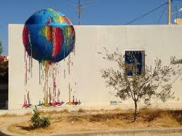L’expérimentation artistique devient un projet pérenne et un vecteur de préservation du patrimoine millénaire de l’île. Les façades des houchs –les maisons à patio, les plus répandues à Djerba –choisies pour accueillir les œuvres sont restaurées dans le respect des savoirs faires et des matériaux locaux. Diagnostics, traitements, nettoyages et restaurations des surfaces sont effectués avant l’arrivée des artistes. Le patrimoine architectural d’Erriadh, façonné par un héritage culturel judaïque et musulman de plus de 2000 ans, reprend vie.
Le musée de Guellala est un musée situé sur l'île de Djerba en Tunisie. C’est en 1991 que germa l'idée de la création d’un musée consacré au patrimoine tunisien et spécialement djerbien dans toutes sa diversité. En 1997, les travaux débutent, et le 15 mars 2001, le musée de Guellela est enfin prêt pour recevoir son premier visiteur, le 15 avril c’est l’inauguration.
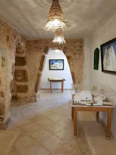 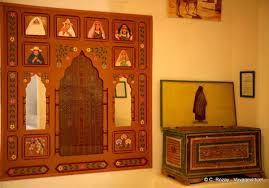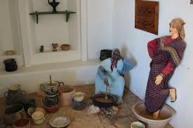Sa superficie est de deux hectares, dont 4 000 m² couverts. De l’extérieur le musée se représente par une architecture qui réunit : coupoles, minarets, maisons traditionnelles, tout en blanc et vert. Le musée de Guellela est un musée des arts traditionnels populaires de Djerba, il est situé sur une colline (Tassida 52 m) qui est le point le plus haut de l’île.
Le chateau, hanté par l'Histoire,construit par le Général et Caid de l’Aradh Hmida BEN AYED vers 1780. Les BEN AYED se sont succéder dans la gouvernance de l’île de Djerba et bien plus durant plusieurs générations. Le Palais BEN AYED fait partie intégrante de la mémoire djerbienne et de son authenticité.
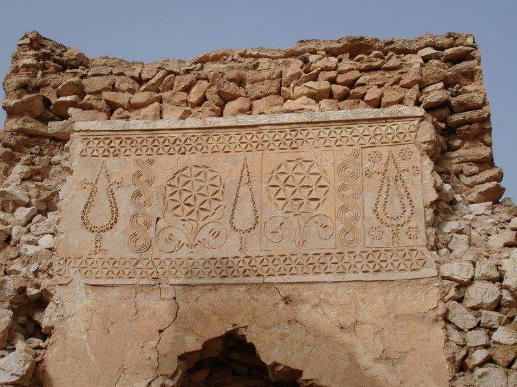 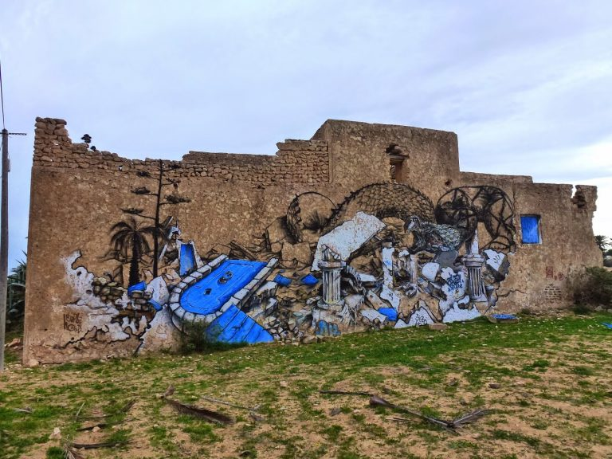 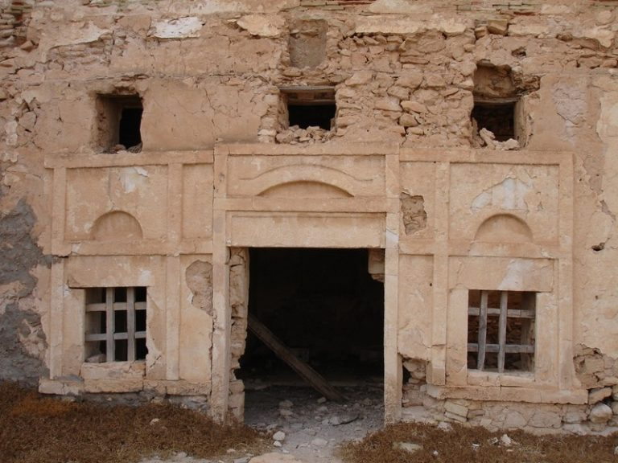Le chateau, hanté par l'Histoire,construit par le Général et Caid de l’Aradh Hmida BEN AYED vers 1780. Les BEN AYED se sont succéder dans la gouvernance de l’île de Djerba et bien plus durant plusieurs générations. Le Palais BEN AYED fait partie intégrante de la mémoire djerbienne et de son authenticité.
| Borj El Ghazi Mustapha | |
| Rass el Rmal | |
| mosquee de djerba | |
| Djerbahood | |
| Museeguellala | |
| Palais BEN AYED |